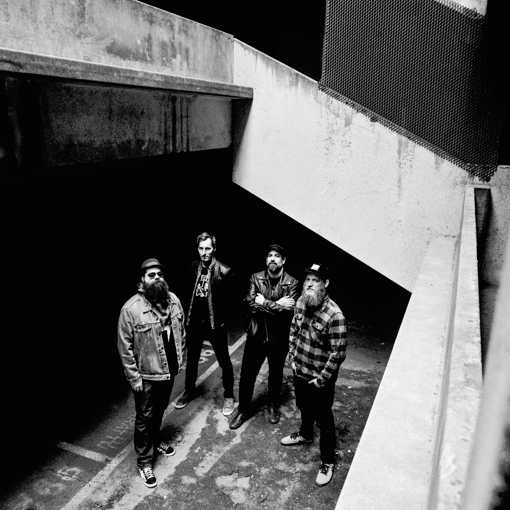

The early stages of Dawn Noir began when João and Eetu, both passionate about music, decided to collaborate. After months of songwriting, Antti joined them with his energetic drumming, followed by Lennart, who added depth with his bass playing, helping to shape the band's unique alt-rock sound.
Ramping up to their debut EP "Was There a Better Way," which came out on all streaming platforms in February 2024, the band released four singles: "Frozen Sunspots," "Erase It," "Haunt Me," and "Putain," along with their respective videos. The next EP "Lost in Future Past" was released in 2025 with three music video singles, Serpent Eyes, Swallow the Sun and Ego Sickness.
By the end of 2026 Dawn Noir is heading to studio to record their first full length album and with the new songs, the band shifts to the next gear, and at times the pace is lifted to almost illegal levels, but they haven't forgotten the diversity and sensibility of their earlier releases, creating a unique blend of alt rock.
